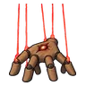
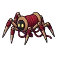
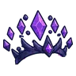
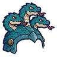
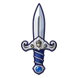
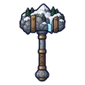
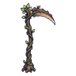
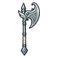
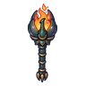
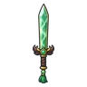

โรงหุ่นใต้วิหาร ชั้น 2 · โต๊ะช่าง
ดูบนแผนที่และวิธีไป วางแผนฟาร์ม
ดันเจี้ยนในเมืองหอระฆัง · Lv 90–94
มอนในแมพ (9)
| มอน | Lv | ธาตุ | โซน |
|---|---|---|---|
| หุ่นไร้หน้า | 91–94 | ไม่มีธาตุ | |
| หุ่นสปริงระเบิด | 90–92 | ไม่มีธาตุ | |
 มือหุ่นยักษ์ | 90–92 | ดิน | |
| 91–94 | ไม่มีธาตุ | ||
 ด้ายพันคน | 91–94 | ไม่มีธาตุ | |
| หุ่นไร้หน้า · ร่างไม้ดำ | 91–94 | ไม่มีธาตุ | |
| หุ่นที่ 4 บอสเนื้อเรื่อง | 91–91 | ไม่มีธาตุ | |
| หุ่นที่ 5 บอสเนื้อเรื่อง | 92–92 | ไม่มีธาตุ | |
| หุ่นที่ 6 บอสเนื้อเรื่อง | 93–93 | ไม่มีธาตุ |
อุปกรณ์ที่ดรอปในแมพนี้
| ของ | โอกาสสูงสุด |
|---|---|
 มงกุฎราชามิติมืด | 1% |
 หมวกเกราะไฮดราสามหัว | 1% |
| ขวานต้นไม้ยักษ์โบราณ | 0.25% |
 มีดคู่ปัดป้ององครักษ์ | 0.25% |
| กระดิ่งวิญญาณทองคำสลักลาย | 0.25% |
 ค้อนยักษ์ยอดเขา | 0.25% |
 เคียวใหญ่ไม้โบราณ | 0.25% |
| 0.25% | |
| 0.25% | |
 ขวานยักษ์มิธริล | 0.25% |
 คบเพลิงด้วงแรด | 0.25% |
 ดาบคู่หยกเขียว | 0.25% |
| ชุดผู้ฝึกเหยี่ยว | 0.15% |
| ชุดแมวผี | 0.15% |
| ชุดมิติมืด | 0.15% |